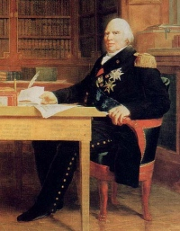
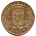
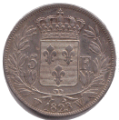
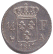

1815-18242e Restauration
Louis XVIIIRoi
Franc germinalSystème
BourbonsRetour
Après Waterloo et la seconde abdication de Napoléon, Louis XVIII revient au pouvoir pour la Seconde Restauration (1815-1824). Le système du franc germinal est conservé. Les monnaies d'or, d'argent et de bronze portent l'effigie du roi et les symboles de la monarchie restaurée (fleurs de lys).
Cette période consolide le cadre monétaire hérité de l'Empire tout en restaurant l'imagerie royale. Louis XVIII meurt en 1824 ; son frère Charles X lui succède.
Sources : infonumis.info · catalogues Le Franc & Gadoury
Les monnaies de la seconde Restauration
'" loading="lazy" decoding="async" />
'" loading="lazy" decoding="async" />

Revers20 Francs LOUIS XVIII au buste nu
Date : 1818 W (Lille) ; 1.314.262 ex. (pour un total de fabrication de 12.733.226 ex. de 1816 à 1824)
Or 900 ‰ ; 21 mm ; 6.41g (théorique 6.45g)
Retrait : 1928
Tranche en creux : * DOMINE SALVUM FAC REGEM
Avers : LOUIS XVIII ROI DE FRANCE∙. Tête nue de Louis XVIII à droite, les cheveux noués d'un ruban tombant derrière la tête ; au-dessous MICHAUT F. et tête de chevail.
Rrevers : 20 F de part et d'autre d'un écu de France couronné entre deux branches de laurier nouées à leur base, millésime entre différent et lettre d'atelier le long du listel sous la couronne de laurier.
Références : F.519 G.1028
'" loading="lazy" decoding="async" />
'" loading="lazy" decoding="async" />

Revers5 Francs LOUIS XVIII au buste nu
Date : 1823 W (Lille) ; 4.165.915 ex. (pour un total de fabrication de 104.199.521 ex. de 1816 à 1824)
Argent 900 ‰ ; 37 mm ; 24.7g (théorique 25g)
Retrait : 1928
Tranche en creux : * DOMINE SALVUM FAC REGEM
Avers : LOUIS XVIII ROI DE FRANCE∙. Tête nue de Louis XVIII à gauche, les cheveux noués par un ruban ; au-dessous MICHAUT et la tête de cheval de Nicolas-Pierre Tiolier.
Revers : 5 F en accostement d'un écu de France sommé d'une couronne royale, contenu dans une couronne ouverte composée de deux branches de laurier nouées à leur base par un ruban ; au-dessous le millésime encadré du différent et de la lettre d'atelier.
Références : F.309 G.614
'" loading="lazy" decoding="async" />
'" loading="lazy" decoding="async" />

Revers1/4 Franc LOUIS XVIII
Date : 1817 A (Paris) ; 100.044 ex. (pour un total de fabrication de 641.376 ex. de 1817 à 1824)
Argent 900 ‰ ; 15 mm ; 1.24g (théorique 1.25g)
Retrait : 1852
Tranche lisse
Avers : LOUIS XVIII ROI DE FRANCE. Tête nue de Louis XVIII à gauche, les cheveux noués par un ruban ; au-dessous un T. cursif.
Revers : 1/4 F. en accostement d'un écu de France sommé d'une couronne royale, au-dessus du millésime ; en bas à droite de l'écu, la lettre d'atelier, à sa gauche, le différent.
Références : F.163 G.352